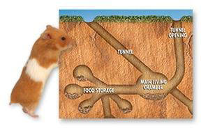

Hablemos primero sobre los perros.Los perros antes aren lobos que fueron evolucionando por millones de años.Han reunido diferentes razas de perros para lograr crear una nueva.
Bueno sabes porque cuando corres mas un perro te sigue.La razon es porque en el pasado nuestros ancestros comunmente cazaban con ellos y tenian ese instinto de perseguir su presa.
Mi raza de perro favorita es el Pastor Aleman cuentame cual es la tuya
Ahora hablemos de los gatos.Los gatos tienen menos tiempo domesticados.Pero no te preguntas si los gatos no nos ponen atencion entonces,porque nos gustan los gatos???.Bueno hay una respuesta para esa pregunta,y es porque sabemos que los gatos son indenpendientes pero les gustan estar con nosotros.
Buenos cambiemos al tema a los roedores.Todos pienzan en ratas cuando oyen esa palabra pero un hamster es un roedor solo es de un raza diferente.
Estas mascotas normalmente estan en ahulas antimordidas.Les gusta la oscuridad te recomendamos que pongas eso tuneles abajo como la foto.Aqui demuestra como estan en la naturaleza.
Disculpenme por no poner nada de los reptiles.Bueno el categoria de los reptiles estan las tortugas,dragon barbudo y muchos mas.Hablare del Dragon barbudo,este reptil tiene un costo cercano a los 80 dolares.